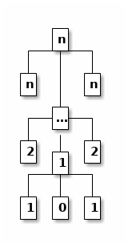

Praktikum Haskell – Tutorium 1 (2017-04-18)
Table of Contents
1 Aufgabe 1 (Folie I/30)
Programmieren Sie die Funktion fib, welche ein gewünschtes Element der Fibonacci-Folge zurück gibt. Die Laufzeit der Funktion soll in O(n) liegen, wobei n der eingegebene Wert ist.
fib: ℕ → ℕ, fib(n) = n, wenn n ≤ 1; und fib(n) = fib(n − 2) + fib(n − 1), wenn n ≥ 2.
1.1 Lösung (exponentiell)
Code:
fib :: Int -> Int fib 0 = 0 fib 1 = 1 fib n = fib (n - 2) + fib (n - 1)
Aufruf:
map fib [0 .. 10]
[0,1,1,2,3,5,8,13,21,34,55]
1.2 Lösung (linear)
fib :: Int -> Int fib = fib' 0 1 fib' :: Int -> Int -> Int -> Int fib' x _ 0 = x fib' x y n = fib' y (x + y) (n - 1)
map fib [0 .. 10]
[0,1,1,2,3,5,8,13,21,34,55]
2 Aufgabe 2 (Folie I/33)
2.1 Aufgabe 2.1
Programmieren Sie die Funktion myReverseInt, die die
Reihenfolge der Elemente einer Int-Liste umkehrt. Die Laufzeit
der Funktion soll in O(n) liegen, wobei n die Länge der
Eingabeliste ist.
myReverseInt :: [Int] -> [Int] myReverseInt = h [] where h xs [] = xs h xs (y:ys) = h (y:xs) ys
myReverseInt [1 .. 5]
[5,4,3,2,1]
2.2 Aufgabe 2.2
Programmieren Sie die Funktion myZipInt, welche zwei
Int-Listen zu einer Liste von Paaren zusammenführt, wobei der
Überhang der längeren Liste verworfen wird, z. B.:
myZipInt [1, 2, 3] [4, 5] = [(1, 4), (2, 5)].
myZipInt :: [Int] -> [Int] -> [(Int, Int)] myZipInt [] _ = [] myZipInt _ [] = [] myZipInt (x:xs) (y:ys) = (x, y) : myZipInt xs ys
myZipInt [1, 2, 3] [4, 5]
[(1,4),(2,5)]
3 Aufgabe 3 (Folie I/35)
3.1 Aufgabe 3.1
Schreiben Sie die Funktion myMapInt, welche eine als Argument
übergebene Funktion auf alle Elemente einer ebenfalls
übergebenen Int-Liste anwendet.
myMapInt :: (Int -> Int) -> [Int] -> [Int] myMapInt f [] = [] myMapInt f (x:xs) = f x : myMapInt f xs
myMapInt (2 *) [1 .. 10]
[2,4,6,8,10,12,14,16,18,20]
3.2 Aufgabe 3.2 (geändert gegenüber der Folien)
Schreiben Sie die Funktion myZipWith, welche zwei
Listen mit Hilfe einer übergebenen zweistelligen Funktion
zu einer Liste zusammenführt, wobei der Überhang der
längeren Liste verworfen wird, z. B.:
myZipWith (+) [1, 2] [3, 4, 5] = [4, 6].
Nutzen Sie myZipWith zur Implementierung von myZip.
myZipWith :: (a -> b -> c) -> [a] -> [b] -> [c] myZipWith _ [] _ = [] myZipWith _ _ [] = [] myZipWith f (x:xs) (y:ys) = x `f` y : myZipWith f xs ys myZip :: [a] -> [b] -> [(a,b)] myZip = myZipWith (,)
myZip [1,2] [3 .. 5]
[(1,3),(2,4)]
4 Aufgabe 4 (Folie I/37)
—
5 Aufgabe 5 (Folie I/45–46)
5.1 Aufgabe 5.1 (Folie I/45)
Vervollständigen Sie folgende Funktionsdefinitionen
- mit Hilfe anonymer Funktionen und
- mittels Funktionen aus dem Modul
Preludeund Unterversorgung ohne neue Bezeichner einzuführen.
Hilfestellung: Funktionen aus dem Modul Prelude.
(.) :: (b -> c) -> (a -> b) -> a -> c flip :: (a -> b -> c) -> b -> a -> c
-- | Verdoppelt alle Werte in einer Liste und addiert 1. doubleInc :: Num a => [a] -> [a] doubleInc = map ... -- | Dreht eine Liste herum. rev :: [a] -> [a] rev = foldl ...
5.2 Aufgabe 5.2 (Folie I/46)
Schreiben Sie Haskell-Varianten des Unix-Programms wc, welches
die Zeilen, Worte und Zeichen der Standard-Eingabe zählt.
$ cat test.txt erste Zeile zweite Zeile $ wc < test.txt 2 4 25
Schreiben Sie eine Version, in der Sie alle komplexeren Funktionen selbst implementieren, und eine möglichst kurze Version, indem Sie Prelude-Funktionen nutzen. Nutzen Sie die Code-Vorlage von der Webseite.
5.3 Lösung (mit Prelude)
module Main where main :: IO () main = getContents >>= print . wc -- | Determines the number of lines, words, and characters in a 'String'. -- Two consecutive lines are separated by one newline character. -- Two consecutive words are separated by at least one whitespace character. wc :: String -> (Int, Int, Int) wc cs = (length $ lines cs, length $ words cs, length cs)
5.4 Lösung (ohne Memory-Leak)
{-# LANGUAGE BangPatterns #-} module Main where import qualified Data.ByteString.Lazy as B import Data.Attoparsec.ByteString.Char8 (isSpace_w8) import Data.Char import Data.List (foldl') import Data.Word (Word8) data Acc e a f = Acc { initAcc :: a , stepAcc :: a -> e -> a , finishAcc :: a -> f } -- | Strictly construct pair. (<!>) :: a -> b -> (a, b) infixl 0 <!> x <!> y = x `seq` y `seq` (x, y) lengthAcc :: Acc a Int Int lengthAcc = Acc 0 (\ r _ -> r + 1) id wordsAcc :: Acc Word8 (Int, Bool) Int wordsAcc = Acc (0, True) step fst where step acc@(cnt, True ) c = if isSpace_w8 c then acc else cnt + 1 <!> False step acc@(cnt, False) c = if isSpace_w8 c then (cnt, True) else acc newlineAcc :: (Eq a, Num a) => Acc a Int Int newlineAcc = Acc 0 step id where step r c = if fromIntegral (ord '\n') == c then r + 1 else r (|!|) :: Acc e a1 f1 -> Acc e a2 f2 -> Acc e (a1, a2) (f1, f2) acc1 |!| acc2 = Acc (initAcc acc1, initAcc acc2) step finish where step (a1, a2) e = stepAcc acc1 a1 e <!> stepAcc acc2 a2 e finish (a1, a2) = finishAcc acc1 a1 <!> finishAcc acc2 a2 foldAcc :: Acc e a f -> [e] -> f foldAcc a = finishAcc a . foldl' (stepAcc a) (initAcc a) main :: IO () main = B.getContents >>= print . foldAcc (newlineAcc |!| wordsAcc |!| lengthAcc) . B.unpack
6 Aufgabe 6 (Folie I/53)
Definieren Sie den Typ Tree, der Rose-Trees repräsentieren
kann, also Bäume deren Knoten jeweils beliebig viele
Nachfolger haben dürfen.
Definieren Sie die Funktion spinalTree :: Int -> Tree Int,
die Bäume folgender Form generiert:
spinalTree n =

Definieren Sie die Funktion height, welche die Höhe eines
Trees bestimmt.
Definieren Sie die Funktion yield, welche alle Blattknoten
eines Trees in einer Liste zurück gibt.
Sorgen Sie für eine Laufzeit in O(n) für yield (spinalTree n).
data Tree a = Node a [Tree a] deriving Show spinalTree :: Int -> Tree Int spinalTree 0 = Node 0 [] spinalTree i = Node i [Node i [], spinalTree (pred i), Node i []] height :: Tree a -> Int height (Node _ []) = 1 height (Node _ ts) = 1 + maximum (map height ts) yield :: Tree a -> [a] yield (Node x []) = [x] yield (Node _ ts) = concatMap yield ts -- based on Data.Tree.flatten yieldFast :: Tree a -> [a] yieldFast t = go t [] where go (Node x []) xs = x : xs go (Node _ ts) xs = foldr go xs ts
(height $ spinalTree 5, yieldFast $ spinalTree 5)
(6,[5,4,3,2,1,0,1,2,3,4,5])
7 Leseauftrag
- Literatur
- [LYaH12, Kap. 7], [PHfNLP15, Folien I/56–62, FS II], [TCP, Kap. 1–3]
- Aufgaben
- [PHfNLP15, Folien I/59, II/6, II/17, II/24, II/31], [TCP, Kap. 3.2, 3.3]
8 Literatur
- [LYaH12]
- Miran Lipovača: Learn You a Haskell for Great Good, 2012, http://learnyouahaskell.com/.
- [PHfNLP15]
- Toni Dietze: Praktikum Haskell für NLP, Foliensatz, 2015.
- [TCP]
- Brent Yorgey: Typeclassopedia, https://wiki.haskell.org/Typeclassopedia.